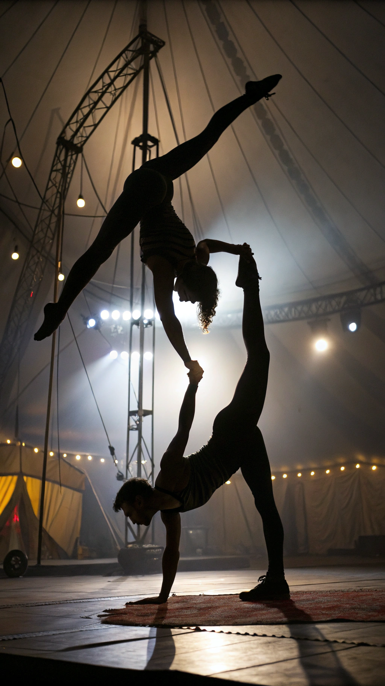
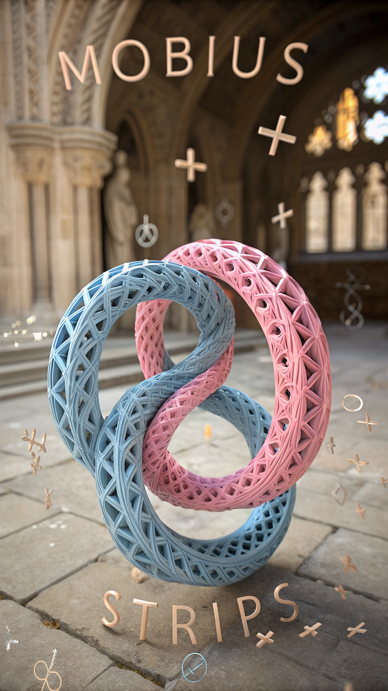
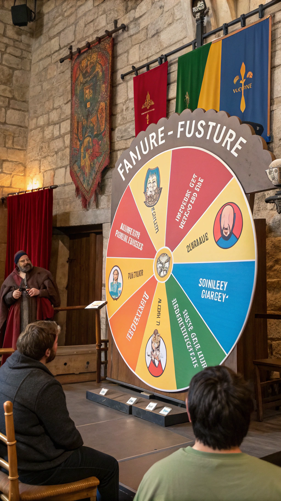
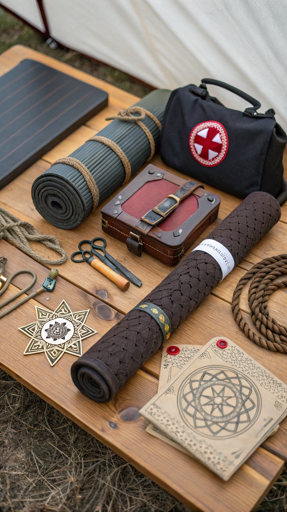
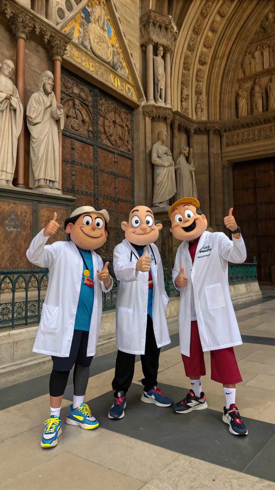

Willkommen zu einer Reise durch die verwirrendsten, akrobatischsten und manchmal absurdesten Liebestechniken, die die Menschheit je erfunden hat. Schnallen Sie sich an!

Diese Position erfordert die Rotationsfähigkeit eines Hubschraubers und die Flexibilität eines Zirkusartisten. Partner A hängt kopfüber von der Decke, während Partner B... nun ja, Sie können es sich vorstellen. Schwindelfreiheit ist Pflicht!

Inspiriert von der endlosen Möbiusschleife, versuchen beide Partner sich so zu verknoten, dass niemand mehr weiß, wo oben und unten ist. Empfohlene Vorbereitung: 3 Jahre Yoga und ein Mathematikstudium.
Bei dieser Praktik befinden sich beide Partner gleichzeitig in mehreren Positionen - zumindest theoretisch. Praktisch endet es meist mit Muskelkater an Stellen, von denen man nicht wusste, dass man dort Muskeln hat.

87% aller Versuche enden mit Lachkrämpfen, 12% mit Zerrungen und 1% behauptet tatsächlich, es geschafft zu haben (Quelle: Institut für kreative Statistiken)
Diese Position erfordert die Präzision eines Origami-Meisters. Schritt 1: Falten Sie Ihren Partner diagonal. Schritt 2: Hinterfragen Sie Ihre Lebensentscheidungen. Schritt 3: Rufen Sie einen Physiotherapeuten.
Ursprünglich für Astronauten entwickelt, funktioniert diese Position nur in der Schwerelosigkeit wirklich gut. Auf der Erde benötigt man mindestens 4 Seile, 2 Karabiner und eine gute Krankenversicherung.


Nach all diesen komplizierten Praktiken kommen 99,9% aller Paare zu dem Schluss: Manchmal ist weniger mehr. Aber hey, wenigstens haben wir jetzt was zu erzählen! Denken Sie daran: Liebe sollte Spaß machen, nicht ins Krankenhaus führen.